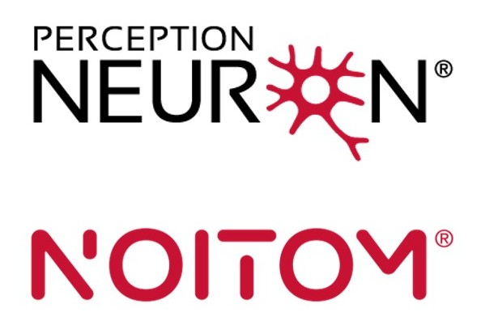
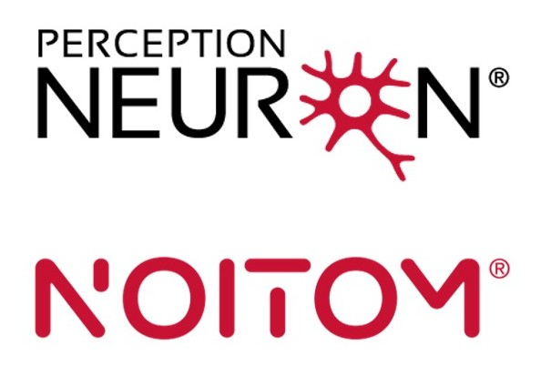

Call for abstracts
We solicit the submission of extended abstracts up to 2 pages (excluding references and supplementary material). This workshop aims to foster interdisciplinary dialogue on how to design Human-Robot systems that balance autonomy and user control, with a particular focus on preserving and enhancing the user's sense of agency.
We welcome contributions addressing (but not limited to) the following topics:
All accepted contributions will be presented in interactive poster sessions. Posters should clearly communicate the main ideas, methods, and findings, and will serve as a basis for interactive discussion.
Submission Guidelines:
- Neuroscientific foundations of agency, embodiment, and ownership.
- Frameworks of shared autonomy in Human-Robot Interaction.
- Experimental studies on the impact of shared control on agency and behavior.
- Sensory feedback and multimodal communication to support intuitive interaction.
All accepted contributions will be presented in interactive poster sessions. Posters should clearly communicate the main ideas, methods, and findings, and will serve as a basis for interactive discussion.
Submission Guidelines:
- Abstracts should be max 2 page, excluding references and supplementary material.
- Please submit in PDF format via EasyChair (EasyChair submission link).
Important dates
Abstract submission deadline: September 23rd, 2025 October 7th, 2025, 23:59 CEST
Notification of acceptance: September 30th, 2025 October 10th, 2025
Videos submission deadline: October 6th, 2025 October 13th, 2025, 23:59 CEST
Notification of acceptance: September 30th, 2025 October 10th, 2025
Videos submission deadline: October 6th, 2025 October 13th, 2025, 23:59 CEST
Poster award
To recognize outstanding contributions and encourage high-quality presentations, the workshop will include a Best Poster Award. All accepted posters will be evaluated based on the following criteria:
The poster award includes cash prizes and an exclusive 50% discount on a motion capture system from the Perception Neuron product line.
The poster award is generously sponsored by:
- Scientific quality and originality of the work.
- Clarity and effectiveness of the poster.
- Ability to communicate key ideas in the 3-minute spotlight video.
- Engagement and discussion during the poster session.
The poster award includes cash prizes and an exclusive 50% discount on a motion capture system from the Perception Neuron product line.
The poster award is generously sponsored by:
- The IEEE-RAS Technical Committee on Human-Robot Interaction and Coordination.
- Prensilia SRL.
- Perception Neuron (registered trademark of Noitom Ltd).
 

Accepted abstracts
Accepted abstracts will be published here by September 30th, 2025 October 7th, 2025